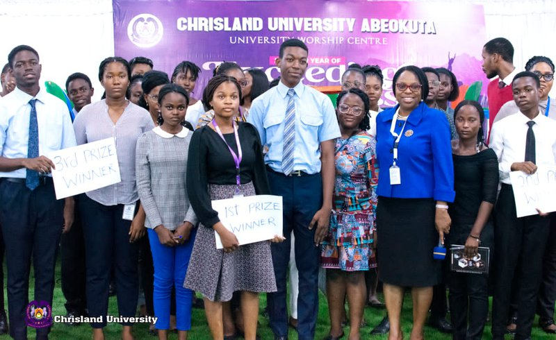
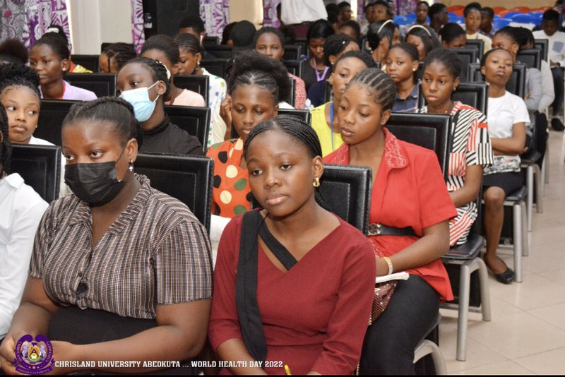

The Department of English has excelled in the Maiden Edition of Chrisland University Spelling Bee Competition held at the University Auditorium on Wednesday, 29th June, 2022.
The competition which was organized by the Department of English as part of their SMART goals, was hosted by the College of Arts, Management and Social Sciences(CAMASS)
The English Department excelled with a score of 36 marks, while the Department of Criminology and Security Studies emerged 2nd position with 27 marks.
The Department of Accounting, and Banking and Finance emerged third position with 23 marks after Mass Communication Department lost to the team in another round of spelling competition after an equalizer.

The overall 1st position won a cash prize of N25,000, the 2nd position bagged a cash prize of N15,000 while the third position was a cash prize of N10,000.
In the same vein, the Department of Criminology and Security Studies won the Vice-Chancellor’s cash prize of N10,000 naira for excelling in the Vice-Chancellor’s sentence structure which formed the second session of the competition.
The Vice-Chancellor, Prof. Chinedum Peace Babalola, in her remark, congratulated the contestants and the winning team.
She specially lauded the Department of English for coming up with the Spelling Bee idea, saying
“I was excited immediately I got the notice about this competition. One thing about competition is that it helps us to improve”.
According to her, language is a very powerful tool for communication which was why the Department deemed it fit to commence the competition to enlighten students on some of the core values of linguistics, as English remains the official language in Nigeria.

Prof. Babalola encouraged the students to utilize what they learnt in the competition as it would help them to be grammatically and structurally fortified.
While speaking on the relevance of the competition, the Ag. Head, Department of English, Dr. Ayo Osisanwo noted that the competition was to help students discover a lacuna which has to be filled via regular reminder on the need to spell words appropriately and to be conscious of writing mechanics in relation to English Sentences.
He commended the efforts of the Vice-Chancellor, Prof. Mrs. Chinedum Peace Babalola, the Dean, College of Arts, Management And Social Sciences, Prof. Temidayo Akinbobola, and the Director of Academic Planning, Prof. Shyngle Balogun for ensuring that Departments come up with smart goals which will assist the Institution in becoming a world-class University.
The event ended with prizes given to first, second and third positions respectively.
Other departments that participated in the competition include, Business Administration, Political Science, International Relations, Psychology, and Economics.